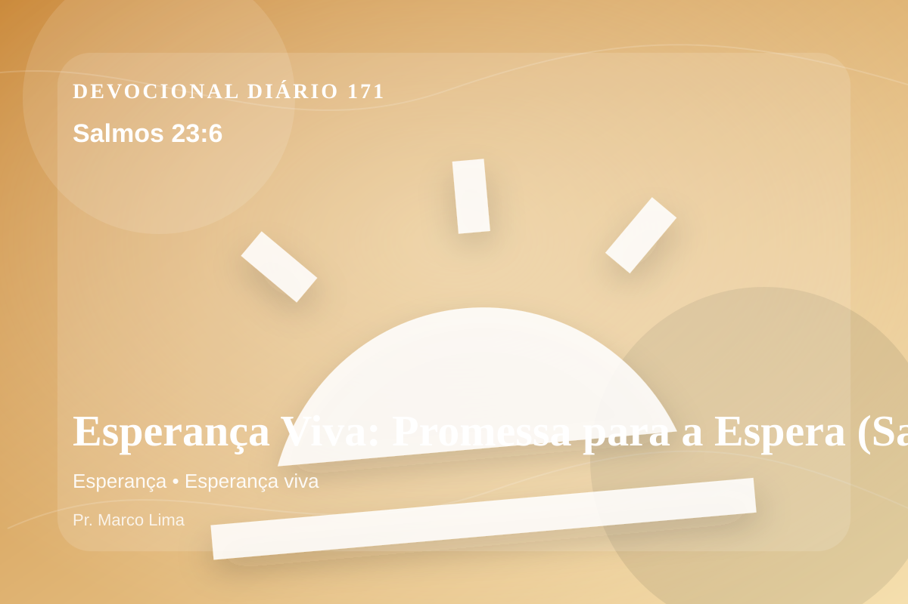

Esperança Viva: Promessa para a Espera (Salmos 23:6)
Certamente o bem e a bondade me seguirão todos os dias de minha vida; e habitarei na casa do SENHOR por muitos e muitos dias.
Pensamento
Esta meditação olha para a mesma verdade por outro ângulo, buscando obediência concreta e não apenas informação. Há dias em que precisamos de uma resposta imediata; há outros em que Deus nos dá algo melhor: uma verdade para sustentar a caminhada. Salmos 23:6 faz isso.
Salmos 23:6 chama o coração a ouvir Deus com reverência e responder com fé prática. A Palavra não foi dada para enfeitar pensamentos religiosos, mas para conduzir pessoas reais ao Senhor.
O tema de esperança precisa ser recebido com simplicidade e seriedade. Receba esta Palavra como convite pastoral: Deus está tratando não apenas circunstâncias, mas o coração. A esperança cristã não é otimismo religioso, mas confiança fundamentada no caráter fiel de Deus. Ela permite atravessar a espera sem abandonar a fé, porque olha para as promessas do Senhor acima das circunstâncias.
O Senhor conhece aquilo que ninguém vê. Por isso, responda com sinceridade: que desejo, atitude ou decisão precisa se render ao governo de Jesus hoje?
Arrependimento não é apenas sentir peso na consciência; é voltar-se para Deus, abandonar o caminho que entristece o Senhor e confiar que a graça de Cristo é suficiente para perdoar e transformar.
Este é o evangelho que sustenta toda aplicação: Jesus Cristo morreu pelos pecadores, ressuscitou em vitória e chama cada pessoa a responder com fé, arrependimento e uma vida rendida ao Seu senhorio.
Em Jesus, o convite de Deus é claro: venha como está, mas não permaneça como está. A graça que perdoa também transforma.
Faça deste dia um altar simples: menos justificativas, mais rendição; menos pressa, mais escuta; menos controle, mais confiança no Senhor.
Para Praticar Hoje
- Leia Salmos 23:6 lentamente e destaque uma palavra ou expressão central do texto.
- Confesse a Deus um pecado, resistência ou frieza espiritual que esta Palavra revelou.
- Declare sua fé em Jesus Cristo e pratique hoje uma atitude concreta de arrependimento e obediência.
Oração
Pai, a esperança cristã não é otimismo vago, mas confiança no caráter fiel de Deus. Salmos 23:6 me ensina a perseverar na espera sem perder a fé. Ensina-me a responder com simplicidade.
{kind=link}